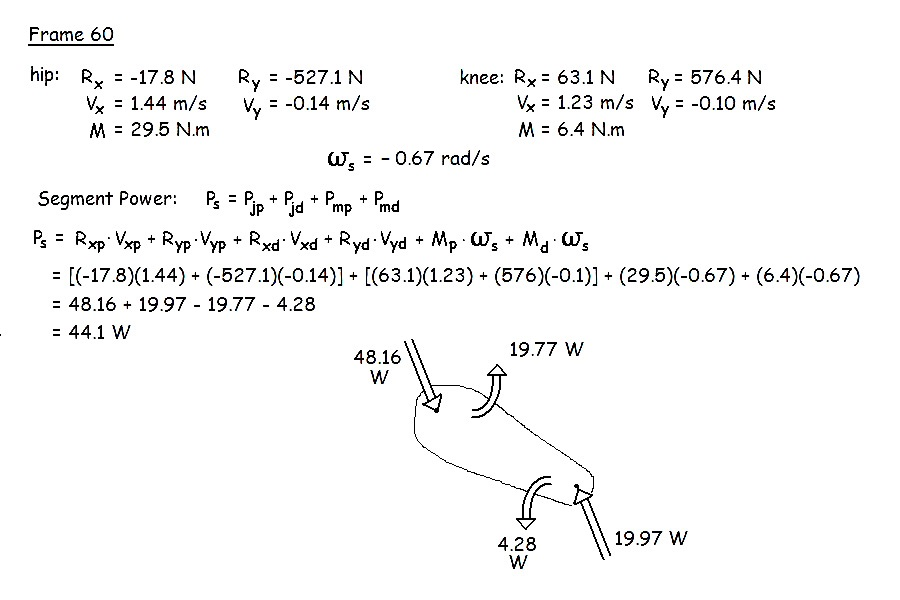

Mechanical Power Flow and Muscular Work
In a previous lecture, we saw how energy could be conserved by transfers within a segment between potential and kinetic energy as well as transfers between segments. We also saw how the power of a segment could be calculated by using finite differences to yield the rate of change of energy. In this lecture, we will look at a different way to calculate the instantaneous power of a segment. This method calculates joint powers as the product of force and velocity as well as muscle powers as the product of net joint moments and the angular velocity of the segment. We start with the joint reaction forces and net joint moments at the proximal and distal ends of the segment that were obtained from a linked segment analysis.
Segment Power

There
are four pathways for power to flow into or out of the segment.
The muscle powers are actively generated or absorbed by the
muscles crossing the proximal and distal joints. A positive
muscle power indicates a concentric contraction in which the muscle is
generating power to the segment. A negative muscle power
indicates an eccentric contraction in which the muscle is absorbing
power from the segment. These powers will be further
interpreted later.
The joint powers are passive transfers between the segment and an adjacent segment. A positive joint power indicates a passive flow of power into the segment from the adjacent segment. A negative power indicates a passive flow of power out off the segment to the adjacent segment.
Example: Calculate the thigh segment power for frame 60 using the following data.

In a previous lecture, we calculated the power of the thigh segment for frame 60 by calculating the rate of change of energy between frames 59 and 61. With that method we obtained a value of 48 W. Theoretically, both methods should yield the same value but they often differ due to small measurement errors that accumulate. The instantaneous power generally has more error because it uses joint reaction forces and net joint moments which require accelerations. Recall from the lab portion that accelerations are obtained by twice differentiating the displacement data from video and that each differentiation suffers from high frequency noise amplification. The rate of change of energy method only uses velocity estimates.
In spite of its accuracy disadvantage, the instantaneous power method is more valuable because it contains diagnostic information regarding how the segment receives or loses energy. The next page examines this diagnostic information further.